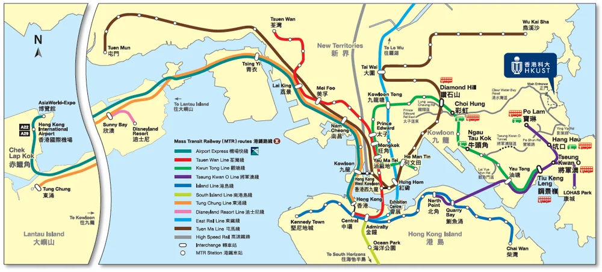
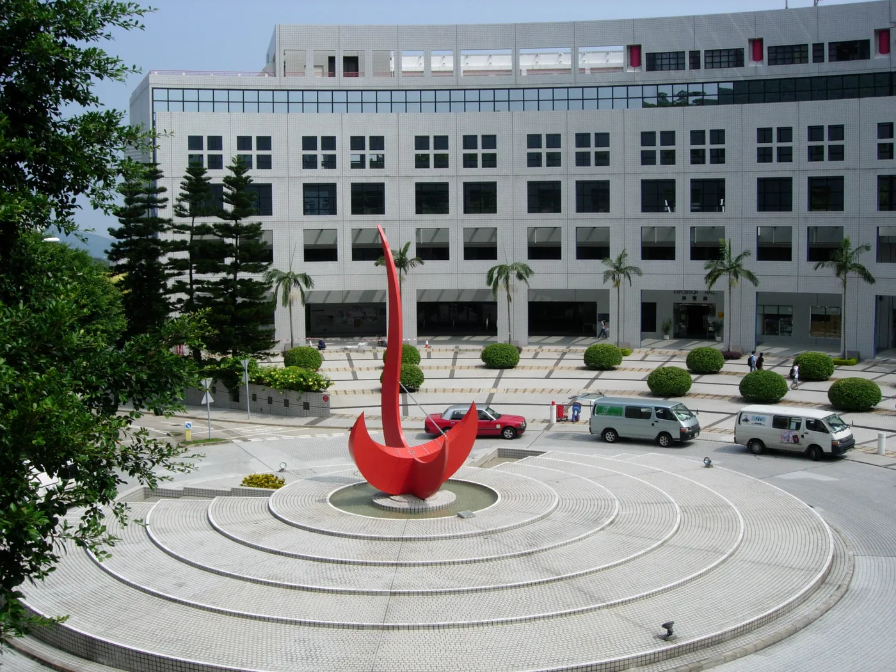
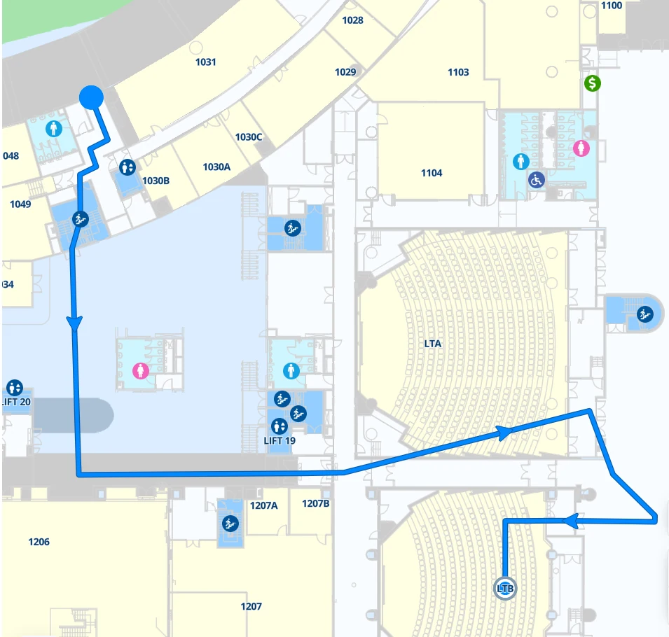

AIDP 2026
Venue
Lecture Theater B (LT-B), Academic Building, HKUST.
Venue information
- Location
- Academic Building, The Hong Kong University of Science and Technology
Clear Water Bay, Hong Kong - Conference dates
- 27–29 November 2026
- Access
- Enter through the North Entrance on Clear Water Bay Road and cross the Entrance Piazza to the Academic Concourse; LT-B is on Floor 1.
Travel information
Directions from Hong Kong to the lecture theater.
Visas, weather, insurance and other practical details are on the pre-arrival information page.
1. From Hong Kong to HKUST
By MTR and bus
Take the Kwun Tong Line to Choi Hung, or the Tseung Kwan O Line to Hang Hau or Po Lam. Bus 91 or 91M, or green minibus 11, 11M or 12, runs from these stations up to the North Bus Stop on campus.
By taxi
A direct taxi from the airport takes about 45 minutes; from Kowloon or Hong Kong Island it is usually quicker than changing trains.
From the airport
With light luggage, Airport Bus A22 to Lam Tin or A29 to Po Lam connects to the MTR. With bulky luggage, a direct taxi is recommended.

2. From the North Bus Stop to LT-B

-
1
North Bus Stop
Buses and green minibuses from Choi Hung, Hang Hau, Po Lam and Tseung Kwan O stop on Clear Water Bay Road, at the north side of campus.
-
2
North Entrance
Follow the road up from the stop to the North Entrance, about two minutes on foot.
-
3
Entrance Piazza
Keep going up the slope to the Entrance Piazza, the round plaza with the red sundial, and go into the Academic Building.
-
4
LT-B, Floor 1
Take the escalator or lift up one level. LT-B (Lam Woo Lecture Theater B) opens off the Academic Concourse.


For turn-by-turn directions, open HKUST Navigate and search for LTB, Academic Building.